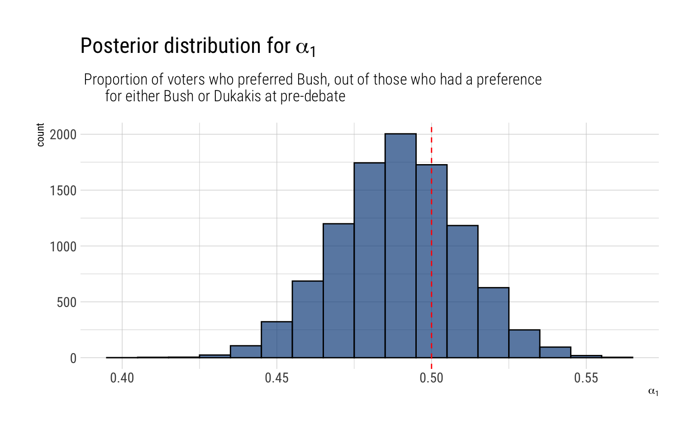
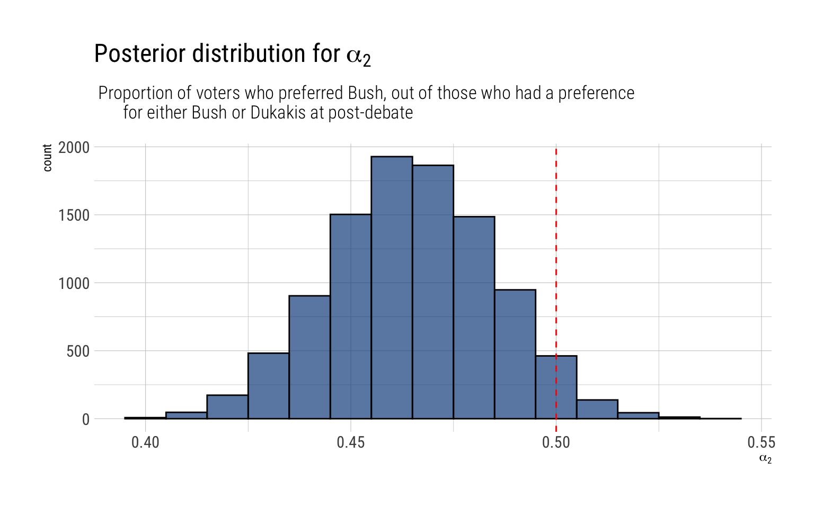
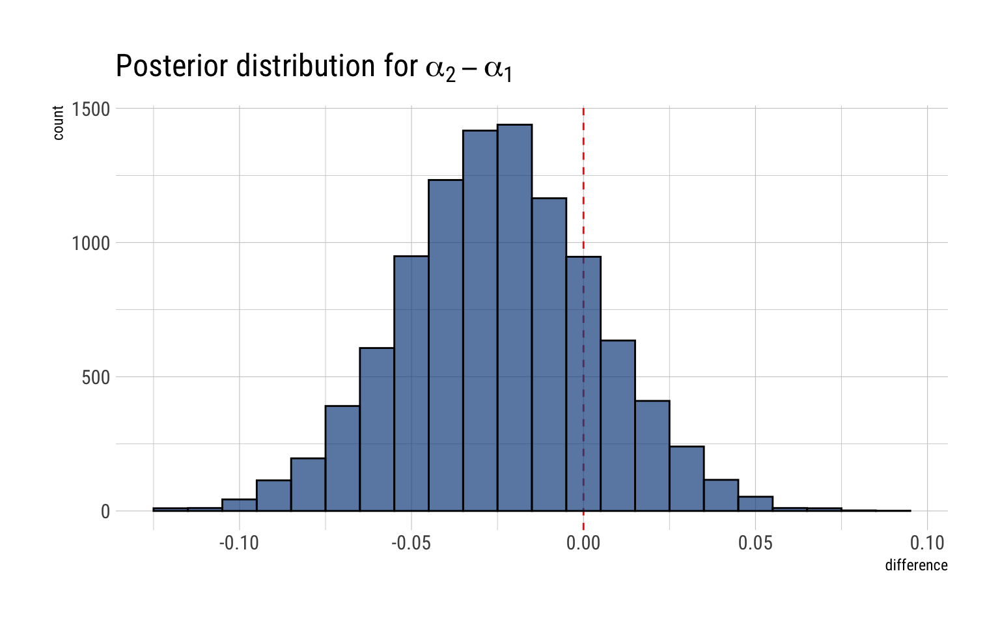
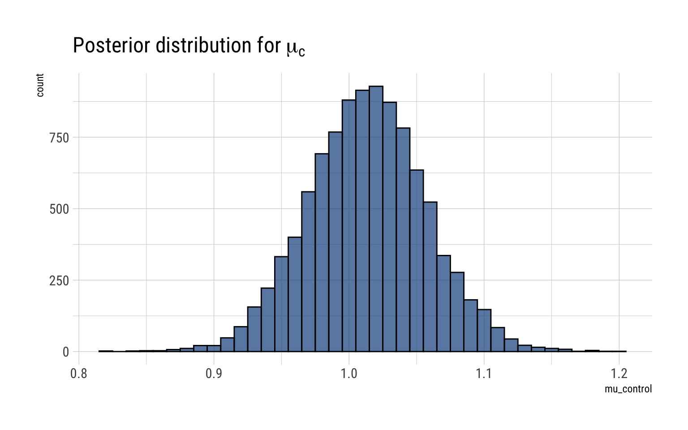
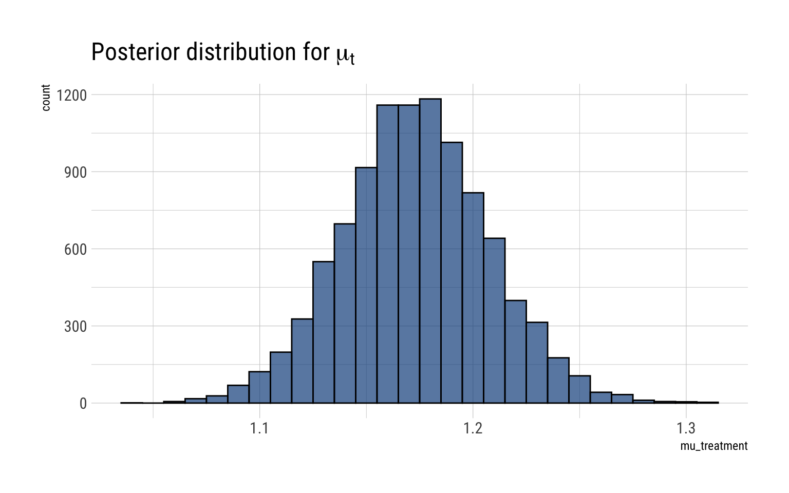

Bayesian Data Analysis (Gelman, Vehtari et. alter) is equals part a great introduction and THE reference for advanced Bayesian Statistics. Luckily, it’s freely available online. To make things even better for the online learner, Aki Vehtari (one of the authors) has a set of online lectures and homeworks that go through the basics of Bayesian Data Analysis.
In this blogpost, I’ll go over a couple of the selected exercises for week 3: exercise number 2 and exercise number 3.
Exercise 2
Comparison of two multinomial observations: on September ( 25,1988, ) the evening of a presidential campaign debate, ABC News conducted a survey of registered voters in the United States; 639 persons were polled before the debate, and 639 different persons were polled after. Assume the surveys are independent simple random samples from the population of registered voters. Model the data with two different multinomial distributions. For ( t=1,2, ) let ( _{t} ) be the proportion of voters who preferred Bush, out of those who had a preference for either Bush or Dukakis at the time of survey ( t . ) Plot a histogram of the posterior density for ( {2}-{1} . ) What is the posterior probability that there was a shift toward Bush?
Therefore, for the pre-debate we posit a multinomial model. A multinomial model is nothing more than the extension of the binomial model to more than 2 categories. Here we have 3: Bush, Dukakis and other. For both models, we assume that the 639 observations are independent and exchangeable. The likelihood for each survey is thus:
Where \(\theta_j\) is the probability of choosing the \(j\) option. The conjugate prior for the distribution is a multivariate generalization of the beta distribution known as Dirichlet:
If we set all \(\beta_j = 1\), we get an uniform distribution on the possible distributions for the \(\theta\)’s. That is, just as the beta distribution, the Dirichlet distribution is a distribution of distributions.
The resulting posterior distribution for the \(\theta_j\)’s is a Dirichlet with parameters \(\beta_j + y_j\). The question, then, is how to go from the \(\theta_j\), the proportion that favors the option \(j\), to the requested \(\alpha_t\):
Proportion of voters who preferred Bush, out of those who had a preference for either Bush or Dukakis at the time of survey t.
Note that given the inherent restriction on the Dirichlet, we can rewrite the distribution of the \(\theta_j\)’s as \((\theta_1, \theta_2, 1 - \theta_1 - \theta_2)\). We can then perform a change of variables: \((\alpha, \gamma) = (\dfrac{\theta_1}{\theta_1 + \theta_2}, \theta_1 + \theta_2)\). Which it can be shown that \(\alpha\) is then distributed thus:
Therefore, setting an uniform prior (\(\beta_j = 1 \ \forall j\)) on the possible distribution of the \(\theta_j\)’s, the posterior distribution is:
\[
(\theta_{bush}, \theta_{dukakis}, \theta_{neither}) | y \sim Dirichlet(295, 308, 39)
\] Which then amounts that the proportion that favor Bush, out of those who had a preference for either Bush or Dukakis in the pre-debate, that is, \(\alpha_1\) is thus:
\[
\alpha_1 | y \sim Beta(295, 308)
\] Which we can visualize thus:
alpha1 =rbeta(10000, 295, 308)data.frame(alpha1) -> simulations_alpha1simulations_alpha1 %>%ggplot(aes(alpha1)) +geom_histogram(binwidth =0.01, color ="black", fill ="dodgerblue4", alpha =0.7) +geom_vline(aes(xintercept =0.5), linetype =2, color ="red") +labs(title =TeX("Posterior distribution for $\\alpha_1$"),subtitle =" Proportion of voters who preferred Bush, out of those who had a preference for either Bush or Dukakis at pre-debate",x =TeX("$\\alpha_1$"))

That is, our posterior distribution points that at the pre-debate, there was already a majority of people (among the already decided) who favored Dukakis. Indeed:
predebate <-pbeta(0.5, 295, 308)glue::glue("There's a {round(predebate, 2)*100}% posterior probability that among decided voters Dukakis had a majority in the pre-debate.")
There's a 70% posterior probability that among decided voters Dukakis had a majority in
the pre-debate.
Post-Debate
Therefore, setting an uniform prior (\(\beta_j = 1 \ \forall j\)) on the possible distribution of the \(\theta_j\)’s, the posterior distribution is:
\[
(\theta_{bush}, \theta_{dukakis}, \theta_{neither}) | y \sim Dirichlet(289, 333, 39)
\] Which then amounts that the proportion that favor Bush, out of those who had a preference for either Bush or Dukakis in the post-debate, that is, \(\alpha_2\) is thus:
\[
\alpha_1 | y \sim Beta(289, 333)
\]
Which we can visualize thus:
alpha2 =rbeta(10000, 289, 333)data.frame(alpha2) -> simulations_alpha2simulations_alpha2 %>%ggplot(aes(alpha2)) +geom_histogram(binwidth =0.01, color ="black", fill ="dodgerblue4", alpha =0.7) +geom_vline(aes(xintercept =0.5), linetype =2, color ="red") +labs(title =TeX("Posterior distribution for $\\alpha_2$"),subtitle =" Proportion of voters who preferred Bush, out of those who had a preference for either Bush or Dukakis at post-debate",x =TeX("$\\alpha_2$"))

After the debate, Dukakis won an even larger majority among the decided voters:
postdebeate <-pbeta(0.5, 289, 333)glue::glue("There's a {round(postdebeate, 2)*100}% posterior probability that among decided voters Dukakis had a majority in the pre-debate.")
There's a 96% posterior probability that among decided voters Dukakis had a majority in
the pre-debate.
A shift toward Bush?
We have the posterior probability for both \(\alpha_1\) and \(\alpha_2\). Sampling form these posteriors, we can then arrive at a posterior distribution for \(\alpha_2 - \alpha_1\)
difference <- alpha2 - alpha1data.frame(difference) %>%ggplot(aes(difference)) +geom_vline(aes(xintercept =0), color ="red", linetype =2) +geom_histogram(binwidth =0.01, color ="black", fill ="dodgerblue4", alpha =0.7) +labs(title =TeX("Posterior distribution for $\\alpha_2 - \\alpha_1$"))

The posterior probability that there was a shift toward Bush is the probability that \(\alpha_2 - \alpha_1 > 0\)
shift <-sum(difference >0) /length(difference)glue::glue("The posterior probability that there was a shift toward Bush is thus {round(shift, 2)*100}%")
The posterior probability that there was a shift toward Bush is thus 19%
Exercise 3
Estimation from two independent experiments: an experiment was performed on the effects of magnetic fields on the flow of calcium out of chicken brains. Two groups of chickens were involved: a control group of 32 chickens and an exposed group of 36 chickens. One measurement was taken on each chicken, and the purpose of the experiment was to measure the average flow ( {c} ) in untreated (control) chickens and the average flow ( {t} ) in treated chickens. The 32 measurements on the control group had a sample mean of 1.013 and a sample standard deviation of ( 0.24 . ) The 36 measurements on the treatment group had a sample mean of 1.173 and a sample standard deviation of 0.20
Assuming the control measurements were taken at random from a normal distribution with mean ( {c} ) and variance ( {c}^{2}, ) what is the posterior distribution of ( {c} ? ) Similarly, use the treatment group measurements to determine the marginal posterior distribution of ( {t} . ) Assume a uniform prior distribution on ( ({c}, {t}, {c}, {t}) )
What is the posterior distribution for the difference, ( {t}-{c} ? ) To get this, you may sample from the independent ( t ) distributions you obtained in part(a) above. Plot a histogram of your samples and give an approximate ( 95 % ) posterior interval for ( {t}-{c} )
Solution
Let’s posit two normal probability models for both the control measurements and the treatment measurements, assuming exchangeability among these two groups.
Control group
Therefore:
\[
y_c | \mu, \sigma^2 \sim N(\mu_c, \sigma_c^2) \\
p(\mu_c, \sigma_c | y) \propto p (y | \mu_c, \sigma_c) p(\mu_c, \sigma_c)
\] If we posit an uniform prior on \((\mu_c, log \sigma_c)\)
Then, the marginal posterior distribution for \(\mu_c\) is a t-distribution:
\[
\dfrac{\mu_c - \bar y_c}{s_c/\sqrt{n_c}} | y \sim t_{n_c-1}
\]
For the control group, we have \(n_c = 32\), \(\bar y_c = 1.013\) and \(s_c = 0.24\)
mu_c <-rtnew(10000, df =31, mean =1.013, scale =0.24/sqrt(32) )data.frame(mu_control = mu_c) %>%ggplot(aes(mu_control)) +geom_histogram(binwidth =0.01, color ="black", fill ="dodgerblue4", alpha =0.7) +labs(title =TeX("Posterior distribution for $\\mu_c$"))

Treatment Group
The same likelihood and prior are valid for the treatment measurements. Therefore, the marginal posterior for \(\mu_t\):
\[
\dfrac{\mu_t - \bar y_t}{s_t/\sqrt{n_t}} | y \sim t_{n_t-1}
\]
For the treatment group, we have \(n_t = 36\), \(\mu_t = 1.173\), \(s_t = 0.2\):
mu_t <-rtnew(10000, df =35, mean =1.173, scale =0.2/sqrt(36) )data.frame(mu_treatment = mu_t) %>%ggplot(aes(mu_treatment)) +geom_histogram(binwidth =0.01, color ="black", fill ="dodgerblue4", alpha =0.7) +labs(title =TeX("Posterior distribution for $\\mu_t$"))

Posterior difference between mu_c and mu_t
To get the posterior distribution of the difference, we compare the samples from the marginal posterior of \(\mu_c, \mu_t\). Therefore, the 95% posterior credibility interval on the different is thus
different_mu <- mu_t - mu_cinterval <- rethinking::PI(different_mu, prob =0.95)lower <- interval[[1]]upper <- interval[[2]]glue::glue("The 95% posterior credibility interval for the difference is {round(lower, 2)}, {round(upper, 2)}")
The 95% posterior credibility interval for the difference is 0.05, 0.27
And the full posterior of the difference is thus:
data.frame(different_mu) %>%ggplot(aes(different_mu)) +geom_histogram(binwidth =0.01, color ="black", fill ="dodgerblue4", alpha =0.7) +labs(title =TeX("Posterior distribution for $\\mu_t - \\mu_c$"))